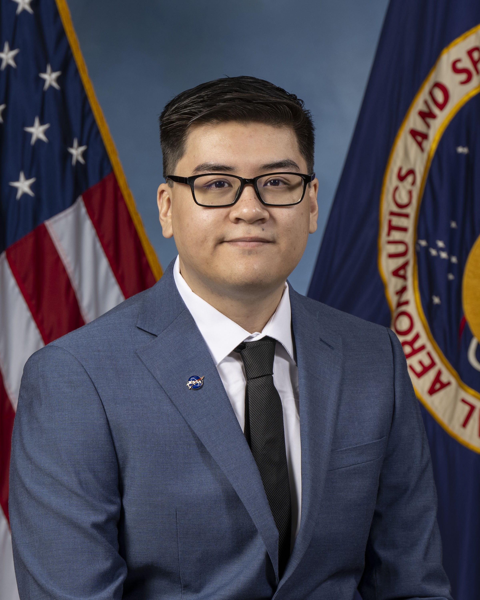

Brian Khang Le Hoang

Brian Hoang, a first generation graduate , is an aspiring aerospace engineer, flight test engineer, and astronaut. He strives to be an impact in the aerospace industry by leading with resilience, inspiring curiosity
for future generations to come, and promoting creative STEM (science, technology, engineering, and math) engagement in the workspace faced with adversities.
Brian takes a lot of my inspiration and introduction to STEM through famous science educators such as Carl Sagan, Bill Nye, Neil Degrasse Tyson, and the Mythbusters.
Since childhood, he has dreamt of being an impactful part of humankind's engimatic understanding of the universe and what it entails. In the work force, he has developed a reputation of being driven to pursue things that are inherently difficult and an individual that is motivated to solve complex problems.
During his undergraduate work, he participated in many aeropace organizations that exposed his interest in rocket engine development, testing frameworks, and the greater research involvment. These experiences had opened an opportunity to be in a full-time contracting position with
NASA's Advance Space Power and Propulsion at the Marshall Space Flight Center where he served as multi-role support for testing and propulsion. His work entails providing intstrumentation support, testing operations, and engineering support
for Nasa's ongoing nuclear propulsion development while also providing robotics, software, and control systems expertise in conjunction with his developing propulsion knowledge base.
He holds a Bachelor's degree in mechanical engineering from the University of Texas at Austin with an interest in pursuing a master's program in aerospace or flight test engineering.
Throughout his education, he provides specialization in mechatronics, programming, and business.
Outside of engineering and aerospace, he enjoy playing music(trumpet and piano), cooking, programming, reading, hiking, climbing, model-making, and high-power rocketry.